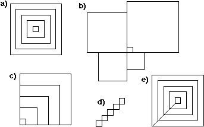

Labs for The Most Complex Machine
xTurtle Lab 2: Thinking about Programs
THIS LAB CONTINUES THE STUDY of programming, which was begun in the previous lab. The emphasis here is on how a complex program can be developed to perform a specified task. An organized approach to programming is necessary for all but the most simple programs. Complex tasks can be broken down into simpler tasks, and complex programs can be built up out of simple components. The problem is how to determine what components are needed and how to piece them together.
Before beginning this lab, it would be useful to be familiar with the material in Chapter 6 of The Most Complex Machine, especially Section 6.3. In particular, this lab uses the ideas of preconditions and postconditions. This lab also uses the "nested squares" example from Section 6.3. You'll also find an introduction to subroutines in this lab. Subroutines are covered in Chapter 7 of the text.
This lab includes the following sections:
Start by clicking this button to launch xTurtle in its own window:
(For a full list of labs and applets, see the index page.)
Preconditions
The xTurtle applet that you have launched should have loaded a sample program called "NestedSquares". Select this program using the pop-up menu at the top of the applet. Read the program and the comments, and run the program by clicking on the "Run Program" button. For this example, and for much of the lab, I suggest that you use the speed pop-up menu to reduce the speed at which programs are executed, so that you will better understand what is going on.
As explained in the text, the key to getting this program correct was making sure that the preconditions for drawing each square were set up properly. A precondition is something that must be true at a certain point in a program, if the program to continue correctly from that point.
The following picture, taken directly from Figure 6.9 in the text, shows the correctly drawn squares and the results of five incorrect attempts to draw them. For each of the incorrect versions, the error can be traced to the fact that one or more preconditions was not met in the program that produced that picture:

In the "NestedSquares" program, there are several statements near the end of the loop that are responsible for making sure that the required preconditions are met. You should try to understand why each of these statements is required. You will work with this example in Exercise 1 at the end of the lab.
Postconditions
Preconditions are things that must be true at a given point in a program for that program to continue correctly. A postcondition is something that is actually true at a given point in the program, because of what has been done by the program so far. A common way for programmers to think about programs is to ask, "At this point in the program, do the postconditions from what comes before match up with the preconditions for what is done next." In addition, the effect of a program as a whole can be thought of as a set of one or more postcondition for the entire program. The postconditions of a program are things that are true after the program has been executed. That is, they are things that are accomplished by the program. For an xTurtle program, the postconditions of the program include the picture that has been drawn on the screen.
The following picture shows a simple "staircase" with 5 steps and another staircase, with 4 steps, leaning at a 30 degree angle:
Suppose that you want a program to draw such staircases. Let's say that the number of steps in the staircase will be input by the user. You will have to use a loop to draw the steps, since when you are writing the program, you don't know how many steps there will be. Each execution of the loop will draw one of the staircase's steps. Before drawing each step, the turtle must be facing in the right direction; this is a precondition. After drawing the step, the turtle has changed direction; this is a postcondition. You have to include commands that will provide "splicing" from the actual postcondition to the desired precondition. After the loop, you will still have to draw the two long sides of the staircase. To get them into the correct positions and orientations, you will have to think about the postconditions that hold after the loop has been executed and how they match up with the preconditions for drawing the lines. Exercise 5 at the end of the lab asks you to write this program.
Subroutines
A subroutine is -- more or less -- a small program made into a black box and given a name. Some subroutines, such as forward and PenUp are predefined; others are written by a programmer as part of a larger program. Subroutines are an essential tool for organizing complex tasks.
Most subroutines have parameters such as the 9 in forward(9) or the 30 in turn(30). Parameters allow subroutines to receive information from the rest of the program or to send information back. Suppose that we want to turn the staircase program described above into a subroutine. Then it would no longer make sense to get the input from the user, since that would greatly limit the generality of the subroutine. Instead, the number of steps would probably be provided as a parameter. From the "point of view of the subroutine," the parameter is like input coming from "somewhere outside," just as input from the user comes from outside the program.
A subroutine definition begins with the word SUB and ends with the word END SUB. Just after the word SUB comes the name of the subroutine and (optionally) a list of one or more parameter names. The subroutine name and the parameters form the interface of the subroutine; everything from there up until the END SUB is the implementation.
The sample program "SpiralsSubroutine" defines a subroutine named spiral. Select this program from the pop-up menu at the top of the xTurtle applet, and read the program and comments. When you click the "Run Program" button to run this program, it will look like nothing has happened! But in fact, the effect of the program is to define the subroutine. Ordinarily, the computer has no idea what the word "spiral" means, but once the computer compiles the subroutine definition, it will then understand commands like spiral(61) and spiral(89). Such commands can be added to the program after the subroutine definition, or they can be entered into the text-input box below the drawing area in the xTurtle applet. Try it. Some of the pictures you can make are rather pretty!
Exercises
Exercise 1: Consider each of the pictures b), c), d), and e) in the nested squares illustration, shown above. For each of these incorrect versions, determine what small change in the program "NestedSquares" would produce that picture. In each case, it's a question of removing one or more statements from the correct program, so that one or more of the required preconditions are not met. In each case, determine which statement to remove and what precondition or preconditions are unmet in the resulting program.
Exercise 2: Select the sample program "Quadratic" from the pop-up menu at the top of the xTurtle applet. When you run this program, it will ask you to input three numbers, A, B, and C. It will then compute and display the solutions to the quadratic equation A*x2 + B*x + C = 0. If you run the program and enter the values 1, 1, and -1 for A, B, and C, it will work fine. However, if you enter 1, 1, and 1 as the values of A, B, and C, the program will crash. This crash can be traced to the fact that at a certain point in the program, there is a precondition that might not be satisfied. If it is not satisfied, an error occurs and the program crashes. What precondition is not properly checked by the program? (It has something to do with the square root function. Recall that in some cases, the quadratic equation has no solutions.) Modify the program so that it does not crash when the input values fail to meet the precondition. Instead of crashing, the program should display an error message and halt.
Exercise 3: This is a continuation of Exercise 2. The "Quadratic" sample program actually exhibits another precondition, which is violated if A equals zero. Where does this precondition occur in the program, and what exactly is the problem with having A=0?
Exercise 4: This is a continuation of Exercises 2 and 3. Another way to deal with a precondition is to write a loop that can only end when the precondition is satisfied. Modify the "Quadratic" program so that the input from the user is read in a loop that can only end if the user has entered legal values for A, B, and C. After the loop, the program can safely compute and print the solutions to the equation.
Exercise 5: Write a program that can draw staircases, like those shown in the picture above. The program you write must meet the following requirements:
- The user will be asked to specify the number of steps.
- Each step is one unit high and one unit wide.
- The orientation of the staircase will depend on the starting orientation of the turtle, as shown in the second example in the picture. This means that you should draw the staircase using only forward, back, and turn commands. Do not use face or moveTo.
- After the staircase is drawn, the position and heading of the turtle will be the same as they were when the drawing begins. This is a postcondition for the program as a whole.
Start your program with the following three lines:
DECLARE NumberOfSteps AskUser("How many steps?", NumberOfSteps) DECLARE countThe variable named count should be used as a counting variable in a loop to count the number of steps that have been drawn. You should think about preconditions and postconditions as you write the program. Include comments in your program that discuss specific preconditions and postconditions for various parts of the program, and explain how they were used -- or could have been used -- in developing the program. It is a bit easier to write the program if you start drawing the steps at the top of the staircase.
Exercise 6: Convert the program you wrote for Exercise 5 into a subroutine. Start by removing the first two lines of the program, which were given to you in Exercise 5. Replace them with:
SUB stairs(NumberOfSteps)Add the line
END SUBat the end of your program. These two steps turn your staircase-drawing program into a staircase-drawing subroutine. After running the modified program, you will be able to use commands like stairs(5) to draw a staircase with five steps and turn(30) stairs(4) to draw a tilted staircase with four steps. To make a more interesting picture, add the following lines at the end of your modified program, after the definition of the subroutine, and then run the program:
LOOP stairs(3) stairs(5) stairs(7) turn(30) EXIT IF heading = 0 END LOOPWhat picture is drawn by one execution of the loop in this program? Why? (You will only get the correct picture if your solution to Exercise 5 meets the fourth requirement imposed on the program in that exercise.) What picture is drawn by the program as a whole? Why?
Exercise 7: Here are some questions about the subroutine you wrote for Exercise 6:
- Why does the single line SUB stairs(NumberOfStairs) replace the first two lines of the program from Exercise 5? Why does it make sense for the variable, NumberOfStairs, in the program to become a parameter in the subroutine?
- In the subroutine, why don't you ask the user for the number of steps to draw? Why is it better to use a parameter?
- The variable "count" in the program from Exercise 5 becomes a local variable in the subroutine. Why? Why is it a local variable instead of a parameter?
- What did you learn from Exercise 6 about subroutines and their use in complex programs?
Exercise 8: Explain carefully why running the sample program "SpiralsSubroutine" does not produce any output or have any visible effect. What exactly does the program do when it is executed? What is the point of it, if it doesn't do anything?
Exercise 9: Write a program that will draw pictures like the following, where the number of "bumps" is input by the user. (In this picture, there are seven bumps.) Note that the number of vertical lines is one more than the number of horizontal lines.
Exercise 10: Convert your program from Exercise 9 into a subroutine in which the number of bumps is specified by a parameter. How would your subroutine be used to produce a picture with seven bumps, like the one shown above?
Exercise 11: The contract of a subroutine is defined to be everything you need to know about a subroutine in order to use it correctly. This includes the name of the subroutine and its list of parameters. It also includes specifications of what must be true before the subroutine is called and what will be true after it finishes execution. These specifications are the preconditions and the postconditions of the subroutine. In an xTurtle subroutine, the preconditions and postconditions usually include statements about the position and orientation of the turtle and about what is drawn on the screen. Here are two square-drawing subroutines. Describe the contract of each subroutine. Include complete specifications of the preconditions and postconditions for each subroutine.
SUB square(r,g,b,size) SUB square(x,y,size) rgb(r,g,b) PenUp forward(size) moveTo(x,y) turn(90) PenDown forward(size) move(size,0) turn(90) move(0,size) forward(size) move(-size,0) turn(90) move(0,-size) forward(size) END SUB turn(90) END SUB
This is one of a series of labs written to be used with The Most Complex Machine: A Survey of Computers and Computing, an introductory computer science textbook by David Eck. For the most part, the labs are also useful on their own, and they can be freely used and distributed for private, non-commercial purposes. However, they should not be used as a formal part of a course unless The Most Complex Machine is also adopted for use in that course.--David Eck (eck@hws.edu), Summer 1997